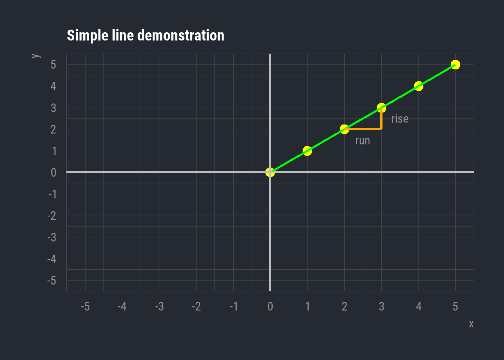
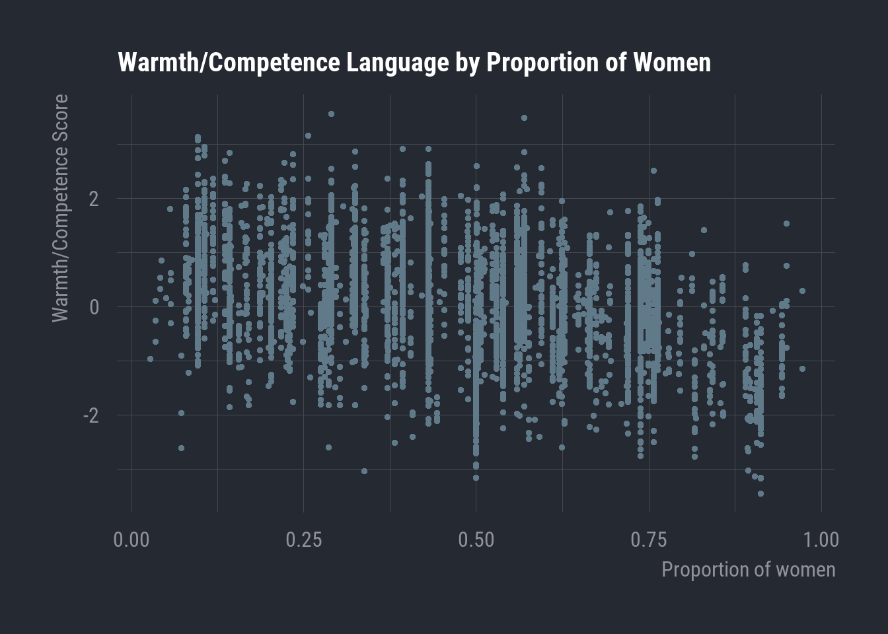
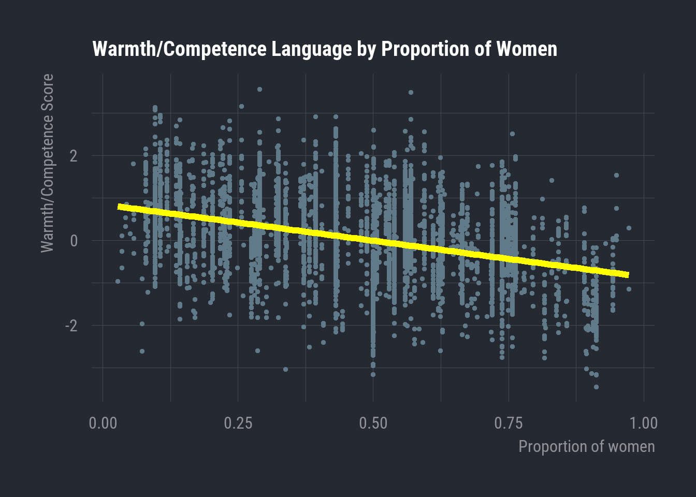
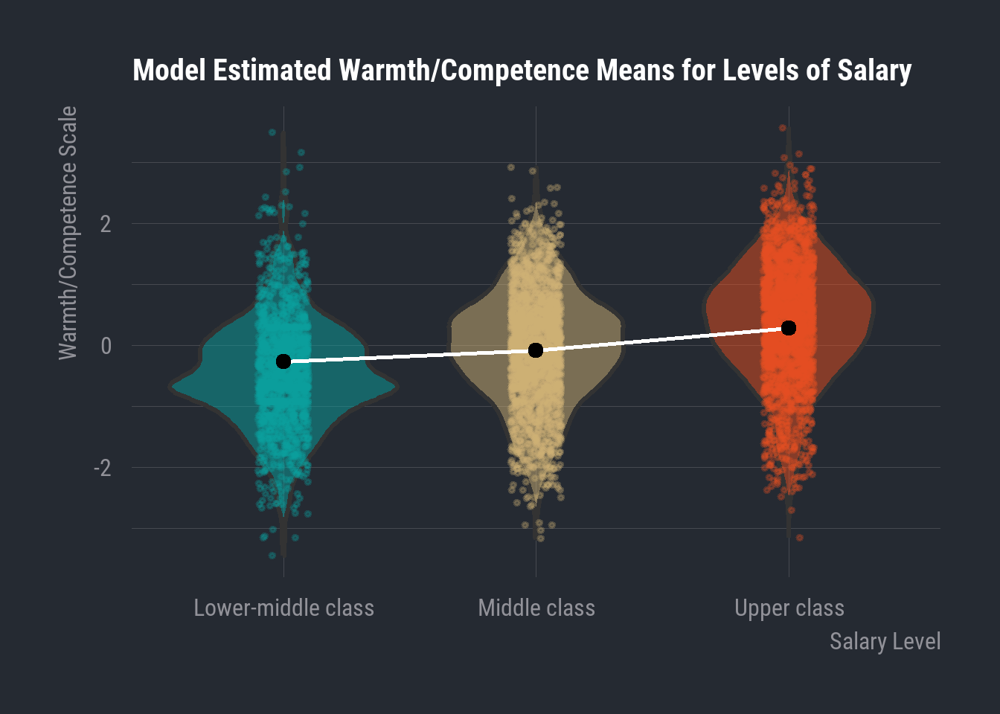

| x | y |
|---|---|
| 0 | 0 |
| 1 | 1 |
| 2 | 2 |
| 3 | 3 |
| 4 | 4 |
| 5 | 5 |
9 General Linear Model
In Chapter 6, we explored some common techniques for displaying and interpreting the bivariate distribution when all our variables are categorical.
That’s a situation you will often find yourself as a data analyst, but the Chi-square test also represents a simple framework for learning and applying the general logic underlying the vast majority of statistical inferences—the comparison of our observed distribution to an estimated null distribution.
However, we also very often need to work with data that comprise a much wider variety of measurement levels. While any interval-ratio variable can be re-coded into an ordinal or nominal variable, we often want our statistical models to preserve the finer granularity of information captured by interval-ratio variables. Additionally, multivariate analyses quickly become quite cumbersome beyond 3 variables. It will not be long before you are utterly drowning in contingency tables.
For these situations—when we have a mixture of numeric & categorical variables or multiple control variables—we often call on the General Linear Model (GLM).
This is not something that we will work with much in our own projects for this course, only because it’s a bit more involved than we have the time cover in the depth it deserves. We could easily spend the entire semester covering the GLM and its various permutations. While it offers us a great deal of statistical power, we have to account for a wider array of underlying assumptions than something like the Chi-square test.
As such, I will use this section to provide a largely conceptual overview of one of the more commonly encountered use-cases of the GLM:
- modeling continuous dependent variables with a mix of numeric and categorical predictors (ordinary least squares regression)
I will you show you some of the code used to create our regression models, but, as we will not focus as much on these methods in lab, I will not go into as much detail on these commands, and I’ll obscure most of my code for the visualizations, so as not to bog you down in some unfamiliar R functions. However, you will get to learn about some of the graphing functions I use here in our next unit.
9.1 Linear Relationships
The GLM is the underlying statistical architecture behind the broader family of regression modeling techniques.
If you haven’t had much experience with statistics up to this point, that all may sound a little ethereal, but it really all follows from a simple algebraic principle you likely encountered in high-school math.
I’ll show you the general equation that underlies the GLM, but first I’ll set set up some context with a refresher on linearity.
\[Y = mX + b\] This is the basic linear equation that we can use to describe any straight line. Mathematical notation is not always especially intuitive, so I’ll clarify the symbols here.
- \(Y\) = The value of our y-axis variable (our dependent variable)
- \(m\) = The slope of the line, which we often learn as \({\frac{rise}{run}}\)
- \(X\) = The value of the x-axis variable (our independent variable)
- \(b\) = The y-intercept, i.e. the value of \(Y\) when \(X = 0\). This tells us where the line begins in our coordinate plane
Let’s take a very simple example to illustrate the point. I’m going to create a dataframe with an ‘x’ column and a ‘y’ column. Each of these variables will be made up of the same vector of values, which will be the sequence of 0:5.
Now, we’ll treat these as coordinates and plot them.

So, here’s the simple line segment that results from the linear combination of our \(X\) and \(Y\) variables.
The y-intercept here is 0. That’s the value of \(Y\) when \(X = 0\)
And the slope coefficient is 1. To calculate the slope, we focus on the distance between two points. The ‘run’ is the distance we travel along the x-axis to get from the first point to the second, and the ‘rise’ is the distance we travel along the y-axis. Here, we travel +1 unit on the x-axis, and +1 unit on the y-axis. Thus, \({\frac{1}{1} = 1}\), and \(1\) is then our slope coefficient.
Now we can plug these values into \(Y = mX + b\). This allows us to describe the conditional distribution of these two variables. In other words, we can assess the value of \(Y\) given our slope and any specific value of \(X\).
For example, if we know that \(X = 4\), we can plug that into our equation
\[Y = (1)\cdot (4) + 0\] And naturally we find that
\[Y = 4\]
This is trivial for our case, given that our example line has very few data points and an incredibly simple relationship (where \(X = Y\)).
However, this general principle of describing a linear relationship between variables provides the basis of some very powerful tools in statistical inference.
9.2 Ordinary Least Squares
While we can use an example like the one above to learn and quickly verify the logic of the linear equation, we are very unlikely to ever work with data exhibiting relationships that straightforward. This is particularly so in our case, as the social world is messy and multiplex.
Let’s take a look at some real-world variables and learn about one of the more common regression techniques: ordinary least squares (OLS) regression.
9.2.1 Gender and Job Ads
| Variable | N | Mean (SD) | Min | Max |
|---|---|---|---|---|
| Warmth/Competence Scale | 5,526 | 0.00 (1.00) | -3.46 | 3.56 |
| Percentage of women | 5,526 | 0.49 (0.23) | 0.03 | 0.97 |
These two variables are taken from a dataframe containing information about 5,526 job advertisements scraped from USAJobs.gov, the advertising site for federal US jobs. These represent all the job ads available during the summer of 2021.
The Percentage of women variable is fairly straightforward. For each job advertisement, this is the corresponding proportion of women employees, as assessed through nationally representative occupational data.
The 'Warmth/Competence' scale is a measure derived from word embeddings. Without getting too in the weeds, know that this is a measure of how prominently the language of a job ad engages the concepts of ‘warmth’ vs. ‘competence’. Positive values indicate more competence language, and negative values indicate more warmth language. Values at or near 0 reflect ads that do not engage either concept more prominently than the other.
In social psychology, the Stereotype Content Model posits that many of our stereotypical perceptions about people can be characterized along these two dimensions. Competence reflects agency, adeptness, leadership, and related qualities. Warmth can be thought of in terms of sociability, and is related to interpersonal people-skills, empathy, and deference.
As this literature has shown, higher status groups tend to be perceived as higher in competence but lower in warmth, whereas lower status groups are often perceived as less competent but more warm. In simpler terms, higher status groups are often thought of us as smart but impersonal, while lower status groups are perceived as less capable but more amiable and sympathetic.
Let’s consider the association between the gender composition of the US federal workforce and the amount of warmth/competence language in job advertisements. As the US is a patriarchal society, masculinity is associated with higher status than femininity. We’ll predict that the language used to describe occupations with a greater proportion of women will engage warmth language more than competence language.
\(H_0=\) There will be no relationship between the Warmth/Competence score of a particular job ad and the percentage of women making up that occupation
\(H_1=\) Occupations with a greater percentage of women employees will have lower Warmth/Competence scores.
Let’s take a look at these two variables plotted against one another. We’re conceiving of the proportion of women as our independent variable and the warmth/competence scale as the dependent variable. So, the former will be on the x-axis and the latter will be on the y-axis.

Now, this is clearly a relationship that’s quite a bit more complex than our simplified example earlier. Each point here is a single job ad, so we have 5,526 points on our graph. Eyeball the plot, it looks like there’s a slight downward trend. Let’s go ahead and draw a line that best characterizes the conjoint distribution of these variables.

9.2.2 The OLS Equation
What I’ve plotted here is the OLS regression line for these two variables. This line solves for the following equation, which is the basis of many models in the GLM framework.
\[{\hat{Y} = {\hat{\beta}{_0}} + {\hat\beta}{_1}X_1 + \epsilon}\]
Now, this may look a bit unfamiliar, but it actually contains much of the same information as the linear equation we reviewed above. We just have some new notation conventions to reckon with.
For starters, we now have the \(\hat{}\) symbol appearing over several variables. This is called, funnily enough, the ‘hat’ symbol. This little ‘hat’ just tells us that the value in question is one we are estimating through regression rather than one that appears in our data.
But roughly the first \(\frac{3}{4}\) of the equation is just the linear equation we saw above.
- \(\hat{Y}\) is an estimated value of \(Y\)
- \(\hat{\beta{_0}}\) is an estimated y-intercept
- \(\hat{\beta{_1}}\) is an estimated slope coefficient for \(X_1\), which is any given value of our independent variable
So this part of the equation:
\[\hat{Y} = {\hat{\beta}{_0}} + {\hat\beta}{_1}X_1\] Is basically just:
\[Y = mX + b\] The \(\beta\) symbol stands for ‘beta coefficient’, which you can just think of as a term-of-art for the values that we estimate through linear regression.
Now we can start to think about how these values are estimated, though I’m going to stay conceptual here. In ordinary least squares regression, the calculation takes our observed x and y values as input and then estimates the slope and intercept that produce a line reflecting the minimum possible distance between the line and all data points.
The math behind this can really get into the weeds, but I’ll give a sense of how this line is derived. The least squares method starts by considering a completely horizontal line at the y-intercept of the data. This is likely to be a terrible fit for any data, but regression starts by estimating the collective distance of all points from this line. I won’t get too into this value, but know that this distance metric is called the sum of squared residuals (SSR). The SSR is taken for this horizontal line at the y-intercept, and then the line is incrementally rotated, with the SSR being calculated many different times for many different rotations of the line. After this iterative cycle, we take the line with the lowest sum of squared residuals as the line best characterizing the linear relationship between \(X\) and \(Y\). That’s also where we get the term “least squares” for this particular style of regression.
I’ll note there’s a really excellent StatQuest from Josh Starmer that gives a great primer on some of these concepts along with highly intuitive visuals.
Now, this raises the question of the last part of the simple linear regression equation: the \(\epsilon\) symbol. This is the symbol for what’s commonly known as the error term.
To understand this term, we need to think big picture about the relationship we’re modeling. We are assuming that the gender composition of the federal workforce influences the representation of these jobs in public-facing advertisements. Now, even if we are right that this influence exists, it’s exceedingly unlikely that the proportion of men/women in a given job is the only thing that influences the way that job is represented in an advertisement. There are all manner of different possible influences—from the type of position it is, the salary, the racial composition of the workforce, the amount of training required for the position, and so on and so forth.
But the reality is that, even if we do include indicators for all of these different concepts, social and mental phenomena are incredibly complex. We may still wind up missing indicators that would influence our dependent variable. In addition, it may also be the case that the variables we do have are insufficient in some way or another.
So, we include the error term as a placeholder to capture the influence of any variation in our dependent variable that is still unexplained after accounting for all of our independent and control variables. If the slope coefficient of our independent variable is the effect of \(X\) on \(Y\), then you can think of the error term as capturing the effect on \(Y\) of everything else our model is incapable of accounting for.
This helps give us better information about our model by characterizing the amount of variation in the dependent variable that is explained by the variables we anticipated as influential. Moreover, if we do not keep this error term in here, we will be guaranteed to erroneously estimate the association between \(X\) and \(Y\), as the model will attribute random error to the \(X\) variable and assume that it explains a lot more of the variance in \(Y\) than it actually does.
9.2.3 OLS in R
Thankfully, as with the Chi-square test, you will almost never need to hand-calculate any of this. In fact, that would very quickly become a monumental task in the case of most reasonably complex models. But, as always, it’s important to look under the hood at least enough to get a feel for the concepts behind any statistical tool.
In R, we can use the base R package lm. The syntax works as follows:
our_model <- lm(`Warmth/Competence Scale` ~ `Percentage of women`, data = workingjobs.df)(1) | |
(Intercept) | 0.846 *** |
(0.030) | |
Percentage of women | -0.017 *** |
(0.001) | |
Number of observations | 5526 |
R-squared | 0.151 |
*** p < 0.001; ** p < 0.01; * p < 0.05. | |
Here we can see two of the key estimated values from our linear regression equation. The y-intercept is likely clear enough: 0.846. This is the estimated value of \(Y\) when \(X = 0\). In other words, this is the Warmth/Competence score predicted by our model for a job with no women at all (i.e. a proportion of 0). Note that this value is positive, indicating that an occupation with no women is estimated to have job-ad language that engages more prominently with competence language.
The value (-0.017) listed for ‘Percentage of women’ is the estimated slope coefficient of this variable. The interpretation here is that, for every one-unit increase in the percentage of women, the Warmth/Competence score is estimated to decrease by 0.017. A one-percentage point increase is fairly small in substantive terms, so we could always multiply this coefficient by 10 to get a broader slope. For example, if the Warmth/Competence scores is estimated to decrease by 0.017 for every additional percentage point, then we would expect the score to decrease by 0.17 for every 10-point increase in percentage.
So, in the context of:
\[{\hat{Y} = {\hat{\beta}{_0}} + {\hat\beta}{_1}X_1 + \epsilon}\] We now have
\[\hat{\beta_0} = 0.846\] and
\[{\hat\beta}{_1} = -0.017\]
Now, let’s touch on statistical significance. We can also see that the coefficients for both our y-intercept and the slope of ‘Percentage of women’ are noted as statistically significant using the star notation we have seen elsewhere. These p-values are calculated using what’s known as a t-test. This is another case where I won’t get much into the math, but know that this test also utilizes the logic of hypothesis-testing that we have seen in other cases.
In the case of associations between a predictor variable and a dependent variable in linear regression, a slope coefficient of 0 would indicate that there is no linear relationship between the variables. The t-test allows us to estimate the likelihood that the slope coefficient we observe is truly different from 0. In our case, this is so.
Let’s briefly discuss one of the other values given in our regression output: the R-squared value.
(1) | |
(Intercept) | 0.846 *** |
(0.030) | |
Percentage of women | -0.017 *** |
(0.001) | |
Number of observations | 5526 |
R-squared | 0.151 |
*** p < 0.001; ** p < 0.01; * p < 0.05. | |
I won’t get too much into the details on the actual calculation here, but R-squared is one of the valuable bits of information we can gather by accounting for the error term (and thereby modeling the variation influenced by factors not captured in our predictor variables). R-squared reflects the proportion of variance in the dependent variable that is directly explained by the independent variable. So, an R-squared of \(0.151\) indicates that roughly 15% of the variation we observe in the Warmth/Competence scores of job ads is explained by the percentage of women in those jobs.
This is fairly low for a couple of reasons. For one, as I’ve mentioned throughout, the social world is multiplex, often outside of our direct control, and difficult to model precisely. If you find yourself with an R-squared of even 0.4 - 0.5, that’s generally considered fairly high. On the other hand, we would also expect this to be low in our case, as we have an incredibly simple model. We could include any number of different control variables that we would also expect to influence our dependent variable and this would likely boost our R-squared. We can also use this metric to help us choose between different model designs.
9.2.4 In Sum
Let’s return now to the hypotheses that we started with.
\(H_0=\) There will be no relationship between the Warmth/Competence score of a particular job ad and the percentage of women making up that occupation
\(H_1=\) Occupations with a greater percentage of women employees will have lower Warmth/Competence scores.
(1) | |
(Intercept) | 0.846 *** |
(0.030) | |
Percentage of women | -0.017 *** |
(0.001) | |
Number of observations | 5526 |
R-squared | 0.151 |
*** p < 0.001; ** p < 0.01; * p < 0.05. | |
Given the results of our regression model, we can reject the null hypothesis, as we find evidence supporting our research hypothesis. The negative, statistically significant slope coefficient for ‘Percentage of women’ aligns with our hypothesis that there will be a positive relationship between the amount of ‘warmth’ language in a job advertisement and the percentage of women in the occupation being advertised. For each one-percentage-point increase in women at a given occupation, our model estimates a corresponding decrease of 0.017 in the Warmth/Competence score of the job ad. The more a job becomes populated by women, the more predominantly warmth language is engaged by the corresponding job advertisement.
The slope coefficient that we calculated here is the one that we first saw visualized at the beginning of this section

What we have just worked through is the simplest case of OLS regression, where there is only one dependent variable and one predictor variable. These principles scale in the case of multiple regression, where we can observe the isolated effects of individual variables when all other predictors are held constant.
9.3 Categorical Predictors
We saw an example above of a continuous dependent variable predicted by another continuous predictor variable. But what happens when we have a continuous dependent variable and a categorical independent variable? How would that even work with non-numeric values? Believe it or not, with some inventive puckishness, we can use linear regression to estimate the effects of categorical variables.
Let’s regress our Warmth/Competence Scale on an ordinal salary variable rather than Percentage of women. This salary variable will have three levels: Lower-middle class, Middle class, and Upper class
our_multimodel <- lm(`Warmth/Competence Scale` ~ `Ordinal Salary`, data = workingjobs.df)(1) | |
(Intercept) | -0.452 *** |
(0.025) | |
Salary: Middle Class | 0.385 *** |
(0.033) | |
Salary: Upper Class | 0.833 *** |
(0.032) | |
Number of observations | 5526 |
R-squared | 0.111 |
*** p < 0.001; ** p < 0.01; * p < 0.05. | |
9.3.1 Categorical Slope Coefficients
For starters, let’s focus on the slope estimates for Salary: Middle class and Salary: Upper class.
Now, estimating any kind of mathematically linear relationship using categorical variables involves a little creativity. Recall that the levels of our categorical variables are often encoded numerically in the back-end of our statistical software. So, the three levels of Salary are also represented as 0, 1, and 2. But, of course, it does not make sense to model these numerically.
The sleight of hand with categorical variables in OLS involves the creation of dummy variables. One level of the variable is left out of the model, and we call this the reference level. For us, our reference level is the level ‘Lower-middle class’, and this is the basis of comparison for the slope estimates that we see for the other two levels we have in our model output: ‘Middle class’ and ‘Upper class’.
Let’s take Salary: Middle class. This dummy variable is created by coding a new binary variable. Each observation is assigned a \(1\) if it reflects a case where the job ad’s Salary is in the Middle class category. This coding process assigns a \(0\) to all other cases. R is very neat for automatically doing all of this for us whenever we include a factor variable in a regression, but know that this is what’s happening on the back-end.
Now, remember that when we interpreted the slope estimate of a continuous variable (Percentage of women), we saw that the estimate reflected the expected change in \(Y\) after a one-unit increase in \(X\). This is where we get inventive. Each dummy variable is now coded as \(0\) and \(1\), so our slope coefficients are now estimating the effect of being Middle class vs. any other level of Salary. This works out to the mean of \(Y\) for the subset of observations where \(Salary = Middle \ Class\)
The estimate for Salary: Middle class then comes through comparison with our reference level, which is Lower middle class in our case. We subtract the mean of \(Y\) for the subset of Lower middle class observations from the mean of \(Y\) for the Middle class cases. Substantively, this gives us the predicted change in the Warmth/Competence Score when going from a Lower middle class salary to a Middle class salary.
I’ll show you this in a little detail with some code
# Calculate the mean for the reference level
workingjobs.df |>
filter(sal_ord == "Lower-middle class") |>
summarize(
mean_lower_middle = mean(comp_sim)
) |>
knitr::kable()| mean_lower_middle |
|---|
| -0.4523064 |
# Calculate the mean of Middle class
workingjobs.df |>
filter(sal_ord == "Middle class") |>
summarize(
mean_middle = mean(comp_sim)
) |>
knitr::kable()| mean_middle |
|---|
| -0.0671131 |
# Subtract the mean of 'lower-middle class' cases from the mean of 'middle class' cases
(-0.06711311) - (-0.4523064)[1] 0.3851933And there you can see the slope coefficient estimated by our model above.
9.4 A Multivariable Example
Lastly, let’s consider a multivariable example and reflect on the elaboration model in the OLS context.
We’ll posit a model where the Warmth/Competence Score is our dependent variable, the Percentage of women is our dependent variable, and Ordinal Salary is our test variable. We’ll see if the negative relationship we observed in our zero-order relationship is affected after controlling for salary.
our_multimodel <- lm(`Warmth/Competence Scale` ~ `Percentage of women` + `Ordinal Salary`, data = workingjobs.df)(1) | |
(Intercept) | 0.412 *** |
(0.043) | |
Percentage of women | -0.014 *** |
(0.001) | |
Salary: Middle Class | 0.181 *** |
(0.032) | |
Salary: Upper Class | 0.545 *** |
(0.033) | |
Number of observations | 5526 |
R-squared | 0.196 |
*** p < 0.001; ** p < 0.01; * p < 0.05. | |
Now, the slope coefficients here for each of these variables are different than the one’s we’ve seen so far. That’s because they are being estimated slightly different. The slope coefficient of (-0.014) for Percentage of women reflects the expected change in the Warmth/Competence Score after a one-unit increase in Percentage of women when holding all other variables constant.
This is another one of those things for which I’m going to stay at the conceptual level. The math for this is very neat, but it’s a bit beyond the scope of our foray. Just know that this process is carefully specified using information from our models, and this process of controlling for the other variables is what explains the differences in slope coefficients for our multiple regression model (as opposed to those we saw for the two simple models we ran above.)
9.4.1 Elaboration Model
Now, let’s think about this in terms of the elaboration model.
(1) | |
(Intercept) | 0.412 *** |
(0.043) | |
Percentage of women | -0.014 *** |
(0.001) | |
Salary: Middle Class | 0.181 *** |
(0.032) | |
Salary: Upper Class | 0.545 *** |
(0.033) | |
Number of observations | 5526 |
R-squared | 0.196 |
*** p < 0.001; ** p < 0.01; * p < 0.05. | |
We can see that the effect of Salary is significant. So, going from a Lower-middle class salary to a Middle-class salary is associated with an expected increase of (0.181) in the mean Warmth/Competence Score, while holding the Percentage of woman constant.
The even larger slope coefficient of (0.545) for Upper Class tells us that there is an even larger expected increase in the mean Warmth/Competence Score when going from Lower-middle class to Upper class.
In general, this tells us that jobs with higher salaries tend to more predominantly engage competence language as opposed to warmth language. In line with our status-related hypotheses, this certainly adds up. we can also see that these effects are both highly statistically significant (at p < 0.001).
But the key for our elaboration interpretation resides with the Percentage of women results in our model output. We now know that our test variable is statistically significant. Salary does influence the Warmth/Competence Score, and there’s a positive relationship. But note that the Percentage of women relationship is basically unchanged. After controlling for salary, we still find a statistically significant, negative association between Percentage of women and the Warmth/Competence Score. The coefficient is almost identical as well (-0.017 vs -0.014).
Because our zero-order relationship survives and remains essentially unchanged after holding our test variable constant, we find evidence of Replication in Elaboration terms.
9.4.2 Visualizing Elaboration
Now, I’ll leave you off with some visualizations of this 3-way relationship.
Below, we can observe the model-estimated mean values for each level of Salary, where we can observe the positive relationship between Warmth/Competence Score and Salary.
These are displayed in a new graphing style: the violin plot. These show us the plotted points of our actual data, and the width of the “violins” corresponds to the frequency of values across various points along the Y-axis. So, areas that are wide along the violin indicate a high frequency of observations with that particular value of \(Y\). The black points in the middle of each violin correspond to the model-estimated mean value of each Salary category.

Next, we can see the line that our model estimates for the relationship between Warmth/Competence and Percentage of women while holding levels of Salary constant. This effect didn’t change all that much after controlling for Salary, but I’m displaying this result from the multiple regression next to the line estimated from the simple regression (with no test variable) so you can get a sense of how controlling for Salary affected the estimation of the linear relationship between Warmth/Competence Score and the Percentag of women.